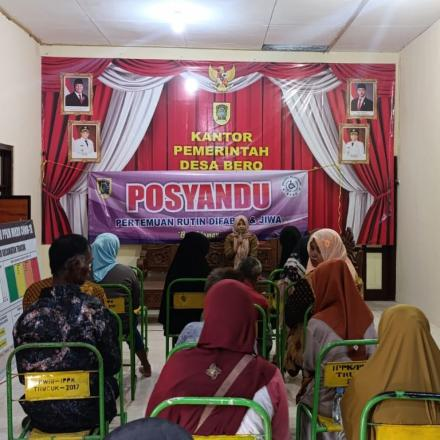
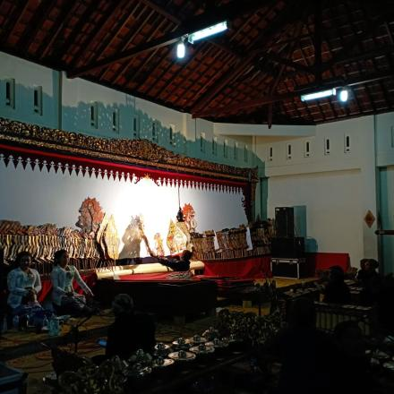

Kerja Bakti Bersih Desa
15 Mei 2026Kegiatan gotong royong warga membersihkan selokan dan fasilitas umum di sekitar lingkungan balai desa.

Posyandu Balita & Lansia
10 Mei 2026Pelayanan kesehatan rutin bulanan untuk mengecek tumbuh kembang balita dan kesehatan lansia di Desa Bero.

Kegiatan Halal Bihalal
05 Mei 2026Halal Bihalal guna memperkuat silhturahmi setelah perayaan Idul Fitri.

Pagelaran Wayang Kulit
28 April 2026Pagelaran Wayang Kulit guna melestarikan budaya.

Pagelaran Seni Ketoprak
18 Januari 2026Pentas Ketoprak “Batik Madrim Sayemboro” Dukung Pelestarian Budaya di Desa Bero.

Peningkatan Standar Keamanan serta Keselamatan di SDN 2 Bero
16 Februari 2024Pembuatan Jalur Evakuasi Seperti Tanda Jalur Evakuasi dan Tanda Titik Kumpul